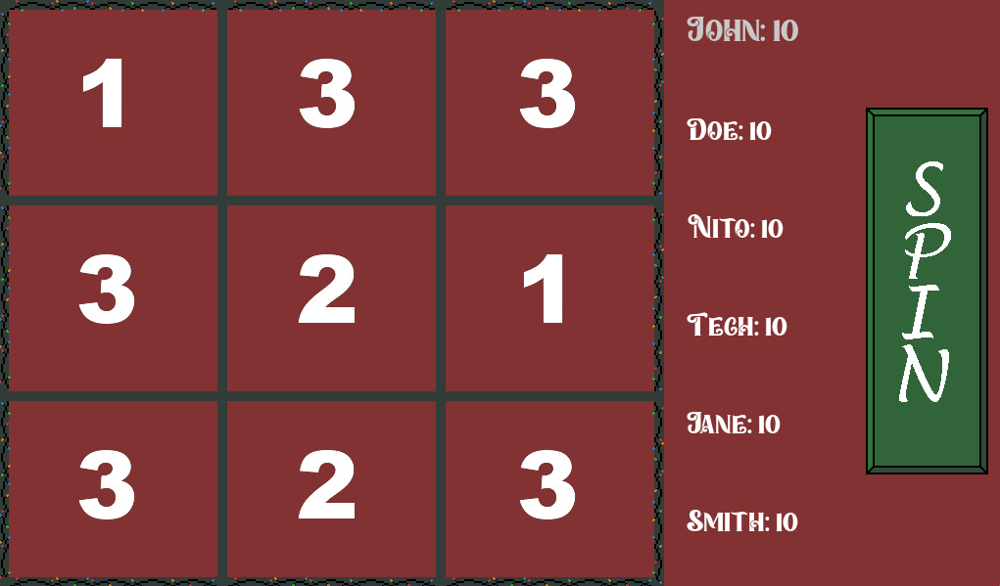
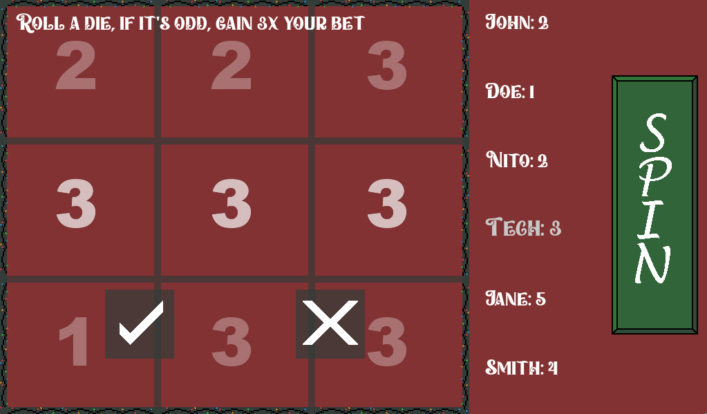
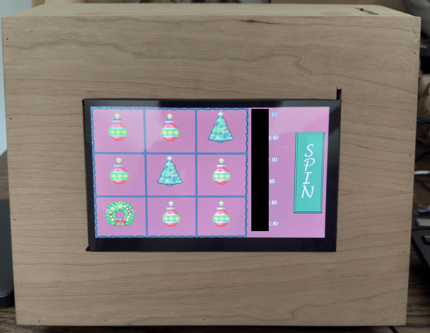

Game Vulnerability Researcher | Anti-Cheat Enthusiast
Here are some of my favorite projects I've worked on
Have you ever wanted to create your own slot machine? and maybe you've wanted to create a physical project utilizing a Raspberry Pi. Those were some of the thoughts I was having when I started creating a Christmas themed slot machine for my families yearly Christmas Eve party. Every year we have a game that someone in the family creates and in past years it has been physical games such as custom made beer pong, skee-ball and more. This year I wanted to take charge of making the game. Below, I will explain everything I needed to create the project, how it works, and provide a link to my GitHub so you can utilize this yourself!
Please hover over any words highlighted in purple to get a description of what they mean!
To start, lets talk about how the code was written for the Slot Machine. I utilized Pygame in order to write the game. Pygame alone covers about 95% of all the coding that is involved with making this game in Python and is definitely something I recommend checking out if you're interested in making a game as well.
Huge shoutout to Not a Software Engineer. When I first started, I watched a video they had created on making a slot machine in Python. This video covers how slot machines work in general, not just in Python. As well as what kind of things we need to utilize in order to simulate a slot machine. Which layed the foundation for my own project.
Once I had a solid foundation of how Pygame and slot machines worked. I began designing my background, fonts, and slot designs. I utilized Aseprite to create pixel art for the game. You can find it on Steam for less than $10 or use any other software to create art that you like.
The only other python libraries that were utilized was Pyserial. This library was needed in order to interact with my Arduino that I had set up with an infrared break beam to detect when coins had been inserted. I'll talk more about the Arduino setup in the Hardware section.
I will give a very high level view of how the game works below with some pseudo code of the games flow.
I'm sure that description may leave a lot to be desired so I will provide some picture of how the game looks below. When the game was actually ran, I had symbols of a Christmas Tree, Reeth, and Ornament. However that art isn't mine and was largely influenced from art I found online so I won't include it in my images below.
Here is the base game screen that loads at the start of every new game.
Here is a challenge screen. This appeared whenever any player that rolled got a match.
Hopefully these images help paint a picture of how the game looked and flowed. Below I will speak on the hardware setup I had running for this.
After all the code was written I ported it over to the hardware and began my own personal headache which was getting it to work physically. I will list out all the issues I ran into below so that hopefully if you face any of these issues you wont spend hours fixing them like I did.
Main hardware used:
If you don't have some already you'll need:
A bit of a long list but that should cover just about everything you need for the project.
The first thing we need to do is flash our Micro-SD card with the most recent installation of Raspberry pi OS. There are probably other ones you can use but I am not familiar with them and this is what I choose: https://www.raspberrypi.com/software/
Afterwards, we can insert the Micro-SD card. Then plug in our keyboard, monitor, mouse, and power cable and power on our Raspberry Pi. Depending on how you ran the installer you may have some initial setup you have to go through but outside of that you should be good.
I was unable to tell if the issue I'm about to cover is for the Hoyound 7 inch monitor specifically. However, if you are seeing an issue where your resolution isn't setup properly. Once booted up, you need to go into /boot/firmware/config.txt and change this line:
dtoverlay=vc4-kms-v3d -> dtoverlay=vc4-fkms-v3d
Incase your eye doesn't catch the change, we are adding an f infromt of the kms-v3d. This changes how visuals work on the raspberry pi and allowed mine to finally detect the monitor's proper length and height and allow me to setup the resolution properly.
Outside of that you can then proceed to port the code into your Pi whether by USB or connecting to your email and downloading there. Whichever works best for you!
You'll need to setup a venv environment and pip install Pygame and Pyserial so that the code will run properly and make sure that when you run your program you are running it from within the venv environment. After that, we should be done with the Raspberry Pi setup.
Last thing we have to setup now is the arduino. To start you'll want to make sure you have your USB to Serial cable so that you can connect the Arduino to your computer. Then install the Arduino application and open up the IDE so that you can write the code that will interact with the Arduino.
Please keep in mind, that while not listed here, the code will be in my GitHub which will be linked at the bottom of this article.
Upload the software to the Arduino then you can assemble the break beam sensors on the Arduino. I followed a great article from Adafruit on this which you can find here: Adafruit: IR Break Beam
The only thing you may need to change in the actual slot machine code itself is the directory or name for the Serial port connected to the Arduino.
Outside of that, after you put together the Arduino and your RaspberryPi is setup, you can take the USB to Serial cable and plug them into the respective devices and launch the program.
At this point, the program should launch as expected and not throw any errors. If errors do come up please inspect the errors and debug as per the error message or online forums on the error.
Keep in mind that the monitor is touch screen so once launched, you shouldn't need a keyboard and mouse plugged in to utilize the game. If you run into a weird issue with the screen not detecting input, simply plug in the mouse touch the screen and then you can unplug the mouse.
Here's a look at how my project turned out with a box created for it.
That completes the Christmas Themed Slot Machine that I created this holiday season. This project took a lot longer than I initially anticipated. Making something that multiple people will be using and are supposed to find enjoyable was a lot harder than I suspected.
Designing an application that can fit a whole bunch of use cases, designing challenges for players that can't do physical activities, and learning how to make a game took a bunch of time and seeing it through was challenging.
However, with that in mind it is something that I look back on and am super proud of myself for taking on, and even more proud that I saw it all the way through as there were so many times I tried to convince myself that it wasn't going to work.
I truly believe that with enough time and effort anything that any of us dream of is possible. So keep your heads held high as we all dive back into our long hours of debugging and I hope you are able to find some comfort in the struggle knowing that you are working on something that you care about.
Please take care, take some time to learn something new, and happy game hacking!
NitoTech
Within Main.py and Machine.py you'll need to go through and uncomment all the comments that are aligned with reading from the Arduino. They are commented out so that you can work on the code without needing to have it plugged in.